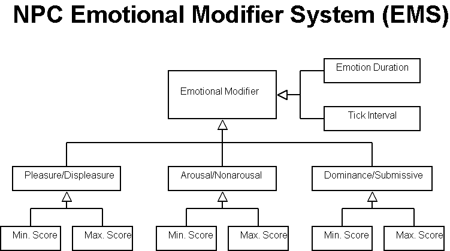

Each skill should cost a certain amount of survival points. Not indicated yet
- because it has to be well balanced. Once all the skills are figured out, costs
should be assigned.
Skills can have dependencies - that is they may depend on some other skill or
ability. Each skill can also cost energy and health (note that the cost may
be negative).
Once a skill has been learned the player will have something like 15% proficiency
at it. This can be further improved by practicing it (The
ratio of time to 1% improved skill is yet to be determined). If the skill
is not used often enough it starts to deteriorate (Again
- at what rate? Should this be influenced by what other skills are used?).
The proficiency at some skill shows how good a chance the character has of succeeding
at it (This might be influenced also by other factors.
Including certainly what exactly the character is trying to do. Crafting a spoon
is easier than crafting a sword.)
Every state has delay, fade in and fade
out attributes. These can be used to make a state take effect some
time later or to blend from 0-100% during a specified time after taking effect.
As the last thing implies - states have blending. That is
- they can be blended together in any fashion. During calculation the blending
variable is used to scale down its effects in any way that makes sense for
the state.
Every State has a lifespan attribute. This means exactly
what the name implies - how long the state lasts. It is set when the state
is created and continuously decreased as it ages. It is not however decreased
at every tick. Rather (as before) it is decreased only when an event happens.
Every time an event happens this is the first thing that is calculated - the
time delta between this and the previous event is subtracted from the lifespan.
When the lifespan is zero the state is destroyed and no other calcualtions
on it are performed. The lifespan can also be modified or "fueled"
during the states existance. For example if a player is already drunk and
then goes on and drinks some more, one does not need to create new states
for it. One would rather increase the lifespan of the states that make up
drunkenness. Keep in mind that this only affects how long some of the states
last (merryness, dizzyness etc.), one should also affect their blending to
make them have greater or lesser effect. An unsigned integer of 32 bits will
probably be used for lifespan and it will be measured in seconds. This gives
~136 years.If more (longer periods and finer control) is needed, an unsigned
integer of 64 bits could be used and it would be measured in milliseconds.
This gives more control and longer periods than one would ever need. If the
game time is somewhere in the range of 30min-2hrs = 1 day, then it is important
to figure out if an iterval of 1ms has any meaning. Also if intervals over
136 years are needed. It is doubtful that any living being in v1 will live
that long. However if races like elves etc. are included later on, thes intervals
could indeed become handy. Another way to modify this thing is to use flags
to indicate the units used for the lifespan. It will be probably up to the
developers to figure out which one is the best way. (What
about overflow? Maybe 64 bit signed integers should be used in the first place
instead of 32 bit unsigned ones...or floats (doubles) could be used.)
The flags of a state should include an immortal flag. When
set the lifespan is completely ignored.
AEMS endeavors to be a relatively simple but realistic method to model the complexities of human emotion in a computer simulation given limited CPU and memory resources. AEMS’ models emotion based on the PAD Emotional State Model. AEMS will allow NPCs (and player characters to a limited extent) to have emotional reactions that are reasonable and appropriate for a given situation. Utilizing AMES NPCs will derive emotions with various influencing factors such as emotional health, environment and past experiences before arriving at an emotional state. If an NPC has a bad opinion of a player or NPC his reaction to a given circumstance will likely be different than if the NPC is interacting with someone they have a good opinion of. NPC's can even have their own personalities and predispositions towards certain emotional states.
In order to understand AEMS one must also understand how PAD works to model emotion. PAD model is comprised of three dimensions that combine to create one’s emotion state: pleasure/displeasure, arousal/nonarousal and dominance/submissiveness. Each other these three dimensions in AEMS can have a value of -100 to +100 (in PAD the values are +1 to -1) with 0 being neutral, -100 being an extremely negative value (this would correspond to -1 in PAD) and 100 being an extremely positive value (this would be +1 in PAD). Pleasure/displeasure refers to the positive or negative feelings that one is having. Arousal/nonarousal refers to the level of mental or physical alertness that one is feeling. Dominance/submissiveness refers to the amount of control that one seeks to excerpt on either themselves or their environment. Using the three dimensions of state mentioned above we can effectively model emotions. Below you will find some examples:
(pleasure(+)/displeasure(-), arousal(+)/nonarousal(-), dominance(+)/submissive(-))
(-50, 60, 25) = angry
(25, 65, 00) = curious
(-65, -65, -.30) = bored
(60, 25, 60) = very happy
(90, 50, -25) = romantic love
(-75, 75, 40) = violently unhappy
As you can see one can effectively model a very wide variety of behaviors in a fairly simple manner using PAD.
AEMS revolves around an agent's "Current Emotional State." An agent's "Current Emotional State" can be defined as what the agent is feeling at any given moment. The agent's Current emotional state is modeled by using the previously mentioned PAD scale (basically a list of three signed integers). Every other modifier feeds and influences the agent's Current Emotional State.
When an agent is instantiated a check is made on the agent's "Default Emotional State" (once again utilizing PAD) which is stored in a DB. This list makes up the player's basic personality and predisposition of mood. We would use this value to make a character who is generally very cranky, pleasant, assertive, depressed or a whole host of other possibilities. After a certain age people generally become set in their personalities and don't change much. This also applies to agents in AEMS although given extraordinary circumstances the Default Emotional State Can Change. Given powerful long term influences or a life altering event an agent can change their Default Emotional State (or personality if you like) although this occurance is rare. The agent's Default Emotional State is then passed on to a sanity check.
The next thing that is referenced after instantiation is the Default Sanity Level and down to the current sanity level of the agent. The sanity level (and default sanity level) is expressed by a simple integer with ranges of -100 to 100 being valid with 0 being perfectly sane. Negative sanity values indicate depression while positive values indicate psycosis (all the way from nervous ticks to psychotic episodes) of varying degrees. Depending on the value of sanity the sanity level is either added or subtracted from all three values in the agent's Default Emotional State. After processing the resulting numbers then become the agent's "Current Emotional State." An agent's sanity state and default sanity state can be influenced by either powerful and/or long lasting Emotional Modifiers (which you'll read about next). Thus an agent can improve or degrade their mental health depending on their environment.

Figure 2
During the course of the game events will take place that will effect the agent emotionally. Events such as the death of loved ones, seeing a shocking event or even births can dramatically influence an agent's mood and emotional state. The Emotional Modifier System models these events an captures numerous qualities about the event and governs how they should affect the agent's mood and for how long. These Emotional Modifiers are kept in a DB and are referenced whenever an event occurs to or around a PC. Once again we utilize PAD to generally model the modifying emotion with a small alteration. Now instead of using a conventional PAD scale where 100 happiness is elation we use the traditional PAD characteristics as only modifiers and not an absolute measurement of happiness. For instance if an agent experienced an event that makes him slightly more happy then the score for the pleasure/displeasure attribute would have a value of +10. For instance if an agent experienced an event that makes him slightly unhappy then the score for the pleasure/displeasure attribute would have a value of -10. Each event that is entered into the emotions DB it is rated for all of the PAD attributes in this manner. Therefore, we can see how our emotional modifiers serve to influence a player's emotion when looking at Figure 1. The Min/Max attributes can serve to limit the minimum or maximum Current Emotional State that an agent can feel. One useage of this would if an agent's spose died. No matter what other positive things happen to the agent it wouldn't do for them to be happy or in a pleasureable state. In this scenario we would likely limit an agent's Pleasure/Displeasure PAD attribute from -100 to -30. Keep in mind that emotional modifiers do not necesarrily have to be an event. Interaction with a PC or another agent can also be an Emotional Modifier and impact a player's mood. Players or other agents which make a bad impression on an agent become transformed into an emotional modifier. Emotion duration is simply a numerical value that generally describes how long an emotional modifier will last. Any Emotional Duration with a negative value will last as long as the agent is alive and values of zero connotate that the Emotional Modifier should end. Emotional duration is only a number and in order for it to have meaning we also need a description of what unit of time we are referencing. Tick interval describes these units in terms of seconds (a value of 1), hours (a value of 2), days (a value of 3) and years (a value of 4) via a lookup table. Once it is determined that an emotional modifier should indeed still affect our agent the PAD values for the agent are added or subtracted from the Current Sanity Level (depending on the values). The net of these scores are then either added or subtracted to the Current Emotional State. If the result of all of these operations do not fall within the Min/Max range set forth in an emotional modifier the agent's current emotional state is modified so it complies with this min/max range. Conflicting min/max ranges are averaged. Thus we finally arrive at an agent's Current Emotional State!
The player characters physical condition is measured by two things - health
and energy.
All metal pieces and items are produced by the smith and should be bought
from him or traded with other players who have the item. There should also
be items that can only be purchased from the shop keep. (What
are these? Maybe a separate list should be kept for both the blacksmith and
shop keep about which items are unique to them.) Things can be bought
from and sold to the shop keep and blacksmith (Again
maybe a list of things they accept would be good). However they buy
for very low prices and sell for too high prices. This will hopefully encourage
trade and trade deals going between players.
The different player classes should be highly dependent on each other. Most
items and activities a player from a certain class does would require stuff
that can only be attained (initially) by one or both of the other classes.
It is still possible to buy everything from everyone, but the prices are set
by the people who make or obtain these items.
An example - one wants to make an enchanted sword: The ore, leather and jewel
are obtained by a hunter from the forrest/mine. Wood can be obtained in many
ways, but in the end it should also be the hunter who gets it from the woods
or at least hunters are hired as guards for the craftsmen who fetch it. Now
some of this is blessed/enchanted by a healer/herbalist. Other parts of it
enchanted by a seer (someone must know a seer - their identities are usually
kept secret so here lotsa social interaction comes in). The ore is brought
to the blacksmith to work into the blade and guard. All of it is assembled
by the craftsman. The final product probably goes to the hunter. How the deals
(other than with the blacksmith) are set up between the players is entirely
up to them.
Every item should have a numeric value specified. The players never see this
value however it is used in NPC trade. Since there is no clear currency the
NPC can't say "All right I'll give ya 2 gold coins for this spoon".
The player has to take from the NPC something that is close to value. So they
may trade the spoon for a loaf of bread for example. For this the NPC calculates
the sum of what the PC is offering and also the sum of what the player wants
from him/her. If they are roughly the same or if what the PC is offering is
higher in value - it's a deal. That "roughly" is dependent on many
things. Mostly the haggle skill of the PC. (What else
does it depend on? Also since players pick the items they want from the NPC
perhaps there should be *some* indication of the value - maybe something like
if the player wants to swap a spoon for a sword the NPC would say "That
is not enough lad/lass!" - Do we need any other indication? Can the player
buy the sword for 4 spoons? How does he know that 4 will be enough - trial
and error? As players live long enough in the world I am sure they will get
more experinced at trade...but the question remains - do we need anything
else to indicate the rough value? Maybe there should be a value estimation
skill - with a semi-random seed per character. So that each chracter guesses
the value differently, but gets the same result on the second guess. The higher
the skill the more accurate the guess. (Similar to the weight estimation in
the information gathering) This could then be added the
the information gathering GUI.).
NPC trade is used to keep prices on the ground. The maximum price ensures
that PC-PC trade prices do not go higher. Having NPCs sell things that are
not available anywhere else but are needed ensures minimum prices in PC-PC
trade - because they all need those items.
Crafting, cooking and doing magic related stuff are all pretty similar. Each of these consists of the same components - first the appropriate skill needed to be able to do the action. Then one needs the knowledge to carry out a specific action. This knowledge can be obtained in written form and later on maybe also verbally. The written form is scrolls and the books of other players. Each player has one - the space in this book is limited. The chance to copy/write something in this book (learning the action while doing so) is determined by the level of the players skill and the level of the action s/he is trying to learn. Then one needs tools to do it and also components/resources. So say for a wooden spoon one needs a piece of wood, a knife and the crafting skill at some level. Somewhere in the game system there should be lists for all of these items. These lists should be simple and easy to change. Each item in this list would list its difficulty level, the energy (and maybe sometimes health) needed to create it and the tools and resources needed to create it. The items would also list their descriptions for each sensory operation. So each item should know what is need to create it, but each item should not know what can be created by using it.
The player should be able to preform basic sensory operations on each object. These would include touch (hands), kick (feet), taste (mouth), listen (ears), look (eyes). To each such operation each object should have a response. The primary response should be a textual description of what happened - like if you eat a mushroom you may get "It was bitter". The action may also have sideeffects - so if you tasted a poisonous mushroom you might be poisoned. Realizing that an action may have several meanings (a touch may feel for texture or test the items weight for example), the answer to the operation should be conclusive "It feels leathery and weighs about 2 pounds". The weight should be a very rough estimate and semi-random - the seed being dependent on the character. So one player may see 2 pounds and the other one 3, but they both get the same result they got before if the action is repeated. Only scales should give an accurate weight. I think this is easy to do with the python scripts cyphesis has :)
Initially the player has no means to navigate by - only
what he sees. A compass can be bought from the shop keeper for a steep price.
The item shows up in the inventory and at the same time it'll show up in the
HUD. With that now the player can at least tell which direction is which. The
player may also learn the direction sense skill. This skill completely replaces
the compass. No compass shows up in the inventory but the HUD compass is there.
Players may also purchase a map from the store - these are in limited quantities
and cost a fortune. However they can be copied with the cartography skill. These
maps are certainly not complete (not showing all the areas in the woods etc.),
but they are still good for general navigation around the area. The map will
show up in the inventory and the visual range of the map will show up in the
HUD. The player will be marked as a dot on the map. Without a compass or direction
sense skill the map will not show the orientation of the character. If the player
owns a compass or has direction sense however the player will appear as a small
arrow on the map, indicating the direction the character is facing.
There might be a small map of the village on the WW website. This map should
not be complete, but enough to get newbs started.
Trading should be done with the following UI. After the
player acknowledges the trading request of the the other player, he/should see
a screen with his inventory and a place to put his stuff (via drag-n-drop).
That place should also show the stuff the other player has put there. One should
not be able to see the whole inventory of the other player, only what he/she
chooses to show you. Sensory operations can be preformed
on the item put there - other than those operations of course that actually
use up the item (like eating it) (How do we specify this?).
Players should be able to talk to each other at the same time and also see what
is going on around them. When the player is happy with the items put in the
common area he/she presses "ok". After the other player has pressed
"ok" too, a screen appears where they see clearly what they are about
to give and recieve. Both players hafta press "agree". After that
the trade is complete and the items are transfered to/from their inventories.
(Should we skip the clarification screen and just have
the both ways agreement (with the addition that if one player pushes "agree"
and the other adds something to the buffer or takes something awya, the "agree"
button will pop up again) on the first screen?)
Only the NPC trade UI is different, since players should select what they want
from the NPC - so it should also show the NPC inventory (at least the things
they are willing to offer). A similar UI should be used for containers of all
kinds. But without the buffer area and the need for both sides to agree on it
of course :)
Inventory space should be restricted by item size only. Item weight should
just determine how encumbered the character is. Since there are restrictions
we should also have a way to carry and store more stuff - containers. At first
we should at least have containers that sit on the ground. Portable containers
could be added later on, but the sooner the better. These items (esp magical
ones - that reduce weight etc.) should be quite rare.
To deal with items thrown on the ground etc - each item should have a timeout
value attached to it. Actually each item should have two of these. One for
how long it lasts when it is in the inventory of a character - food spoils
etc. Maybe each item should also have a condition attribute to it and this
should depend on how much time has passed since it was created (repaired),
also what has been done with it and how long until it is no more (the timeout
value). The second timeout indicates how long it lasts when it has been thrown
on the ground. Most items will disappear in 24h game time - that is if a player
does not want it during the day a beast will surely have carried it away during
the night :). There should be some logic at least to these values. As I already
mentioned, some items can be mended. So there should be a flag to indicate
this. Also there might be an attribute to indicate how much a repair costs
(some kind of a ratio - like per 10% of recovery). This should be similar
to item creation. That is - it needs energy/health, tools and resources.